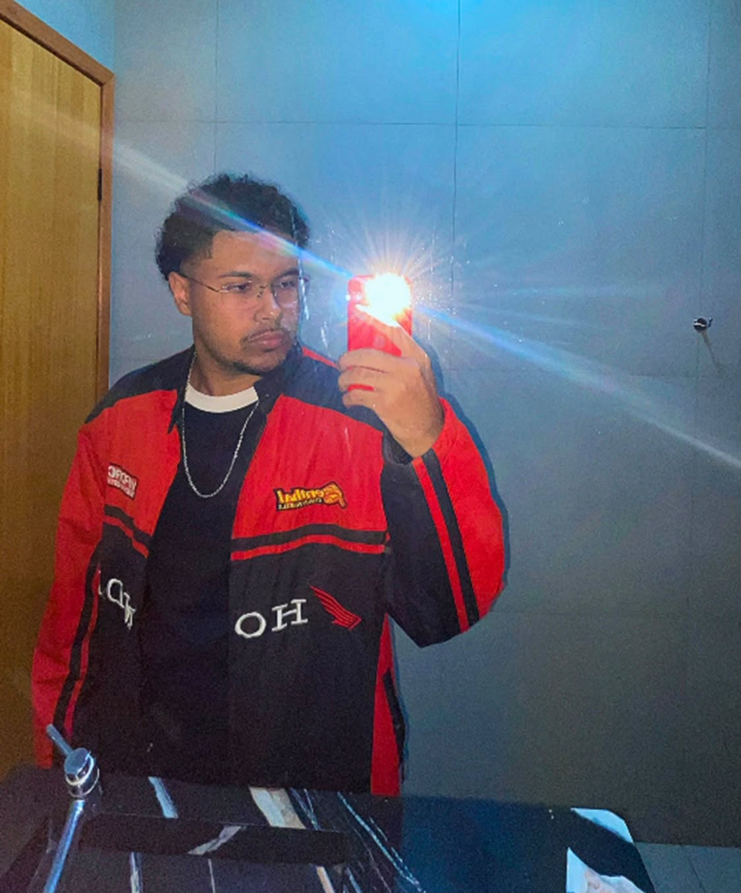

Me chamo Álvaro Miguel, tenho 19 anos e sou natural do Goiás. Concluí o ensino médio em escola publica e durante ele realizei o curso técnico em Informática para Internet na ETEC. Armando José Farinazzo em Fernandópolis-SP.
Atualmente, estou cursando Sistemas de Informação no IFSP-Votuporanga e membro da Torcida Jovem do Santos.

Sou apaixonado por tecnologia, futebol e musica.